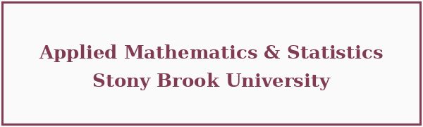

Uryasev70
August 22–23
Stony Brook University
Stony Brook University
| Home | Registration | Program | Directions | Flyer |
Uryasev70 is a two-day conference celebrating the 70th birthday of Prof. Stan Uryasev, bringing together academics and practitioners to honor his contributions to Operations Research and its applications.
Program · Download program (PDF)
This conference brings together leading researchers in operations research, stochastic optimization, variational analysis, risk-averse optimization, machine learning, finance, and engineering applications. The workshop is organized in honor of Stan Uryasev’s 70th birthday and is intended as a high-level academic event for faculty, students, and researchers interested in modern developments in operations research and its applications. The program focuses on topics including:
See the Program page for the full schedule and the program PDF.
Confirmed speakers:
Invited / pending confirmation: Michael Zabarankin, Vladimir Boginski, Valeriy Ryabchenko, Alex Veremyev.
A block of rooms is reserved for conference participants at the Hilton Garden Inn Stony Brook at a discounted rate. Booking details will be posted here closer to the event.
Anton Malandii (Stony Brook University, Brown University)
Stan Uryasev (Stony Brook University)
Contact information is available on the Directions page.
Applied Mathematics and Statistics Department at Stony Brook University.
|
 |